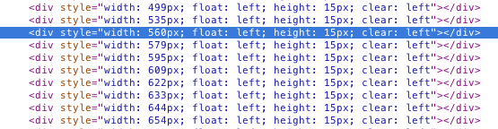

文字环绕图像处理技术
可以让我们把文字环绕在图案边上而不是把文字环绕在整个图像的边上
下面我们来看看使用jquery.slickwrap.js之前和使用之后的对比
文字环绕在整张图片的边上而不是环绕在图案的边缘
现在文字是环绕在图案的边缘
首先我们来看看它的主要思想：
它先创建一个canvas画板，然后设置背景色并且把图片放入canvas中；然后把图案等分成高度相同都为h的模块，然后计算出每一个模块的长度x。知道这个长度之后通过parent方法找到图像的祖先元素，然后依次插入高度为h宽为x的div;同时把convas画板作为背景，这样就实现了文字环绕图像的技术。

function slickWrapImage(settings){}//用于处理html文件里面设置的布局和图像信息
function calculateDivWidths(canvas, padding, bgColor, resolution, bloomPadding, cutoff){}
>//用于计算需要在页面显示的div的宽度
log("Inside %o calling %s()", this, arguments.callee.name);
var $image = $(this);
var $parent = $image.parent();
var floatDirection = $image.css("float");
log(" $(this)=%o, $(this).parent()=$o, floatDirection=%s",
$image, $parent, floatDirection);
//图像排列方式只可以居左或居右
if(floatDirection != "left" && floatDirection != "right"){
return;
}
/*
* Find the padding all the way around.
*/
var padding = {
top: $image.css('padding-top'),//设置元素上内边距的宽度
right: $image.css('padding-right'),
bottom: $image.css('padding-bottom'),//设置元素的下内边距（底部空白）
left: $image.css('padding-left')
};
padding.top = parseInt(padding.top.replace(/[^\d]*/g, ""));//?
padding.right = parseInt(padding.right.replace(/[^\d]*/g, ""));
padding.bottom = parseInt(padding.bottom.replace(/[^\d]*/g, ""));
padding.left = parseInt(padding.left.replace(/[^\d]*/g, ""));
定义变量存储从html文件里读取的数据
/* Create a canvas and draw the image onto the canvas.*/
//<canvas> 标签定义图形，比如图表和其他图像。
//<canvas> 标签只是图形容器，必须使用脚本来绘制图形。
var canvas = document.createElement("CANVAS");
canvas.width = $image.width()+padding.left+padding.right;
canvas.height = $image.height()+padding.top+padding.bottom;
var width = canvas.width;
var height = canvas.height;
var context = canvas.getContext("2d");//返回一个用于在画布上绘图的环境。
/*Draw the image once in the top-left, so we can grab the background //抓取背景
* color */
context.drawImage(this, 0, 0);
var imageData = context.getImageData(0, 0, width, height);
var data = Array.prototype.slice.call(imageData.data);
if(settings.bgColor == null){
settings.bgColor = {
r: data[0],
g: data[1],
b: data[2],
a: data[3]};
}
/*
* Fill the whole image with the background color, then try again.
*/
context.clearRect(0, 0, width, height);
context.fillStyle = "rgba("+settings.bgColor.r+","+settings.bgColor.g+","+settings.bgColor.b+","+settings.bgColor.a+")";
context.fillRect(0, 0, width, height);
context.drawImage(this, padding.left, padding.top);
/*
* Set the parent's background-image to this image.
*/
$parent.css({
"background-image": "url("+canvas.toDataURL()+")",
"background-position" : "top "+floatDirection,
"background-repeat" : "no-repeat"//background-repeat 属性设置是否及如何重复背景图像。默认地，背景图像在水平和垂直方向上重复。
});
//div标签样式
var divWidths = calculateDivWidths.call(this, canvas, padding, settings.bgColor, settings.resolution, settings.bloomPadding, settings.cutoff);
var divs = [];
var divHeight = settings.resolution;//分辨率
var divWidths_length = divWidths.length;
//设置div宽度
for(var i = 0; i < divWidths_length; i++){
divs.push('<div style="width: '+divWidths[i]+'px; float: '
+floatDirection+'; height: '+divHeight+'px; clear: '
+floatDirection+'"></div>');
}
$parent.prepend(divs.join("")); // 在被选元素的开头（仍位于内部）插入指定内容
/*
* Adjust theheight of the parent element just in case it's too
* short. If we didn't do this the new background image could
* get cut off.
*/
var parentHeight = $parent.height();//该变量指的是包含当前分割窗口的父窗口。如果在一个窗口内有分割窗口，而在其中一个分割窗口中又包含着分割窗口，则第2层的分割窗口可以用parent变量引用包含它的父分割窗口。
var imageHeight = $image.height()+padding.top;
if(parentHeight < imageHeight){
$parent.height(imageHeight);
}
/*
* Hide the image itself.//隐藏本身图像
*/
$image.css("display", "none");
console.log('>>>>'+divWidths);
}
var $image = $(this);
var $parent = $image.parent();
var floatDirection = $image.css("float");
var lineHeight = resolution;
var width = canvas.width;
var height = canvas.height;
log("Padding: ", padding);
/*Get drawing context for canvas...*/
var context = canvas.getContext("2d");
计算div宽度总共分为4个步骤：
var image = context.getImageData(0, 0, width, height);//取convas画布在坐标（0，0）的像素
var data = Array.prototype.slice.call(image.data); //把image数据都存放到data数组里面
if(bgColor == null){
bgColor = {
r: data[0],
g: data[1],
b: data[2],
a: data[3]};}
// Threshold the image
var data_length = data.length;
for(var i = 0; i < data_length; i=i+4){
var distance = {
r: Math.abs(bgColor.r - data[i]),
g: Math.abs(bgColor.g - data[i+1]),
b: Math.abs(bgColor.b - data[i+2]),
a: Math.abs(bgColor.a - data[i+3])
};
if(distance.r < cutoff && distance.g < cutoff && distance.b < cutoff && distance.a < cutoff){
//默认cutoff为5是一个自定义的变量用来比较图像RGBA的差值
data[i+3] = 0;
} else {
data[i+3] = 255;
}
}
var paddingSize = bloomPadding ? 0 : (floatDirection == "left" ? padding.right : padding.left);
var result = [];//定义的计算结果数组
var rows = height / lineHeight; //默认lineheight为20（自定义的变量）
rows = height % lineHeight == 0 ? rows : rows + 1;
for(var row = 0; row < rows; row++){
var maxWidth = 0;
/* Calculate the start and end positions for the loops. */
var startX = floatDirection == "right" ? 0 : width-1; //X轴初始位置
var endX = floatDirection == "right" ? width-1 : 0; //X轴结束位置
var startY = row * lineHeight;//Y轴初始位置
var endY = startY + lineHeight-1; //Y轴结束位置
endY = endY >= height ? height-1 : endY;
if(floatDirection == "right"){//文字悬浮方式为右的时候
for(var y = startY; y <= endY; y++){
var offset = y*(width*4);
//用存储判断每行第一个像素点在data数组中的RGBA的值位置
var foundAt = width - x;//用于存放在指定高度像素内div宽度的最大值
for(var x = startX; x <= endX; x++){
var location = x*4 + offset;
//用于判断指定位置的像素在data数组中的RGBA的值位置
if(data[location+3] == 255){ //如果A的值为255时确定图案的边界
foundAt = width - x;
break;} }
if(foundAt > maxWidth){
maxWidth = foundAt;}}}
else { //文字悬浮方式为左的时候
for(var y = startY; y <= endY; y++){
var offset = y*(width*4);
var foundAt = 0;
for(var x = startX; x >= endX; x--){
var location = x*4 + offset;
if(data[location+3] == 255){
foundAt = x;
break;}}
if(foundAt > maxWidth){
maxWidth = foundAt;}}}
result.push(maxWidth+(maxWidth != 0 ? paddingSize : 0));}
return result;
$.fn.slickWrap = function(args){}；
$.fn.slickWrapLineHeight；
(function($){}；
var settings = {
bgColor: null,
bloomPadding: false,//控制显示元素边距
// bloomPadding: true,
resolution: 20,
cutoff: 5
};
$.extend(settings, args);
return this.each(function(i){
/* 如果父节点不是一个有效的图像文件，就跳过它*/
if(this.tagName != "img" && this.tagName != "IMG"){
return;}
/* If the image has been loaded, go ahead and operate on it,
* otherwise wait until it's loaded by binding to the 'load' event.*/
if(this.complete){
log("%o was already loaded, calling "+
"slickWrapImage.call(this)", this);
slickWrapImage.call(this, settings);
} else {
log("%o wasn't loaded yet, calling "+
"bind('load', slickWrapImage)", this);
$(this).bind("load", function(){
slickWrapImage.call(this, settings);});}});};
/*
* Make a utility plugin for finding line-height of an element.
*/
$.fn.slickWrapLineHeight = function(){
return 12;
};
/*
* If the browser doesn't support canvas, skip everything by re-writing the
* slickwrap plugin to just be a no-op.
*/
var testCanvas = document.createElement("CANVAS");
if(testCanvas.getContext == null){
$.fn.slickWrap = function(nodes){
return this; };}
(function($){
var logging = false;
//抛出错误提示，取的对象不可以为空
if($ == null){
throw new Error("jQuery must be available for jQSlickWrap to be "+"activated.");}
if($.fn.slickwrap){
throw new Error("A plugin which introduces the function 'slickwrap' to "+"the NodeList object already exists and jQSlickWrap will not "+"function."); }
function log(){
if(window.console && logging){
if(window.console.log){window.console.log.apply(console,Array.prototype.slice.call(arguments)); }}}
/
#